.jpeg)

.png)

.png)

Space4Ag's 2026 Hosts
We would like to thank our incredible hosts for opening their homes and businesses to us,
and
for sharing their invaluable knowledge on this tour.
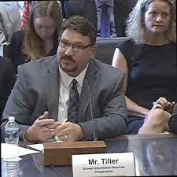
Billy Tiller
Bus Host & Emcee, Monday Morning · Founder, Grower Information Services Cooperative
Billy Tiller is a fourth-generation farmer in Lamb and Bailey Counties, about an hour northwest of Lubbock, and the founder of Grower Information Services Cooperative (GiSC) — the first cooperative formed to represent growers' interests on the question of who owns farm data. Founded in 2012 and headquartered at the Texas Tech Innovation Hub, GiSC now has members across 41 states and all major commodities, and is the only producer-owned organization in the world focused solely on ag technology and data.
He has testified before the House Agriculture Committee on farm data policy, serves on the board of Ag Data Transparent, and has been named by PrecisionAg among the ten most intriguing people shaping precision agriculture in the United States. Billy will host the bus Monday morning, setting the stage for the week's conversations about data, trust, and the farmer's stake in both.
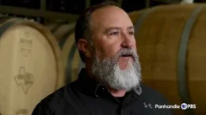
Andy Timmons
Bus Host & Emcee, Monday Afternoon · Lost Draw Vineyards, Brownfield, Texas
Andy Timmons farms at Lost Draw Vineyards in Brownfield, Texas, where his family has worked the High Plains red earth since the early 1900s. A Texas Tech agronomy graduate who began his career in cotton and peanuts, he moved into wine grapes and has become one of the most influential growers in the Texas wine industry, supplying fruit to wineries across the state and co-founding Lost Draw Cellars in Fredericksburg to carry his own fruit from vine to glass.
He is known for investing in progressive technology and viticulture practices to protect vines against the region's hail, wind, and drought. Andy will host the bus Monday afternoon through the Brownfield area.
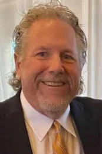
Michael Ratke
Bus Host & Emcee, Tuesday · Southwest Ag Services & The Pumpkin Patch · Farwell, Texas
Michael Ratke is a business owner and farmer from the Texas Panhandle. He and his wife Donna own and operate Southwest Ag Services, a farm, ranch, and dairy retail and wholesale agriculture supply business in Farwell, Texas, and partner with their son in The Pumpkin Patch, the second largest decorative pumpkin shipper in the southern U.S. He also farms corn, cotton, wheat, hay, and cattle. He is President of Eagle Crest, Inc., a real estate development company in Clovis, NM, and an advisor to Capital M Management.
Michael graduated from Southwestern Oklahoma State University in 1985 with a degree in Management, followed by an MBA in Economics in 1987. He spent four years with the Texas Department of Banking in West Texas before joining a group in 1991 to purchase the Muleshoe State Bank in Muleshoe and Farwell. He began growing pumpkins as a sideline in 1992 and turned to farming full time in 2001.
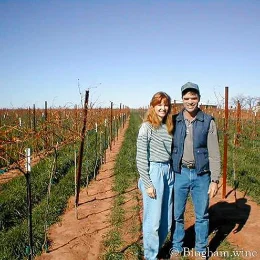
The Binghams
Cliff, Betty, and Kyle Bingham · Meadow, Texas
Cliff and Betty Bingham are fourth-generation farmers near Meadow, Texas, who began farming full time in 1981 and became early pioneers of Texas organic agriculture, certifying their 2,000 acres for organic cotton, peanuts, wheat, and sesame in 1991. Looking for ways to conserve water, they planted their first wine grapes in 2004 and have since built Bingham Family Vineyards into an award-winning, 100% estate Texas wine label — including three Top Texas Wine honors — with tasting rooms in Meadow, Grapevine, Hye, and Roanoke.
Their son Kyle Bingham now leads day-to-day operations on the family's 2,000+ acre farm, balancing cotton, wine grapes, hemp, and playa wetland conservation. The Binghams will host the Space4Ag Tour's opening farm stop, walking visitors through their fields, playa, vineyard, and winery.
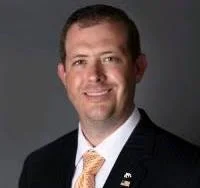
Sam Nesbitt
Market President, First United Bank · Brownfield, Texas
Sam Nesbitt is Market President for First United Bank in West Texas, where he has spent nearly 15 years in agricultural and commercial banking with deep experience in commercial underwriting and loan portfolio management. He is a graduate of the Texas Agricultural Lifetime Leadership program (TALL XVII) and a supporter of the Sandhills Area Research Association.
Sam will speak to the financial side of conservation agriculture — how lenders evaluate the risk and return of practices like no-till, cover crops, and irrigation efficiency, and what it takes to finance a transition on a West Texas farm.

Terry Soil and Water Conservation District
208 West Broadway · Brownfield, Texas
The Terry Soil and Water Conservation District is a legal subdivision of Texas state government, governed by an elected board of local producers, that delivers a locally driven conservation program for Terry County. The district works one-on-one with landowners on land management goals and conservation planning, and runs tree and seed sales, educational programs, and community events built around agricultural stewardship.
Its outreach reaches well beyond the farm gate through the Terry County Farm Tour for Kidz, the Women in Ag program, the Agricultural Career Expo, and scholarships for local graduates. District leadership will share how conservation planning works at the county level and what practices are taking hold across Terry County's cotton and peanut ground.

South Plains Underground Water Conservation District
Brownfield, Texas
The South Plains Underground Water Conservation District manages the groundwater of Terry County, sitting atop the southern reaches of the Ogallala Aquifer — the resource that makes irrigated agriculture on the High Plains possible and whose decline shapes nearly every farming decision in the region. The district monitors water levels and quality, sets and tracks desired future conditions for the aquifer as part of Groundwater Management Area 2, and partners with neighboring districts on aquifer studies with the USGS.
Together with Sandy Land and Llano Estacado UWCDs, it delivers the Southern Ogallala Conservation and Outreach Program (SOCOP) across Gaines, Terry, and Yoakum counties, along with rainwater harvesting workshops and scholarships for graduating seniors. The district will speak to what the data says about the aquifer beneath Terry County and how that shapes local water planning.
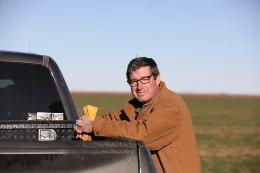
Barry Evans
Kress, Texas
Barry Evans is a fourth-generation farmer near Kress, Texas, growing roughly 4,500 acres of cotton and grain in rotation to withstand drought and stretch the declining Ogallala Aquifer on the Texas High Plains. Facing that aquifer decline, he converted his entire operation to no-till in 1996 and has built a reputation as one of the region's leading voices on soil health and water conservation.
His work has earned national recognition, including Field to Market's 2021 Farmer of the Year award for sustainability leadership, the Cotton Grower Achievement Award, and the Joseph J. O'Neill Cotton Marketer of the Year Award. He is a member of the U.S. Cotton Trust Protocol, and will share how three decades of no-till, drought-tolerant rotations have kept his farm productive as water grows scarcer.
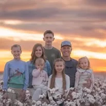
Jeremy and Sarah Brown
Broadview Agriculture · Dawson County, Texas
Jeremy and Sarah Brown lead Broadview Agriculture, a fourth-generation, family-owned farm in Dawson County, Texas, where they raise cotton (both organic and conventional), wheat, rye, grain sorghum, sesame, and peanuts alongside their five children. Starting in 2013, Jeremy built the operation around no-till, cover crops, crop rotations, reduced fertilizer inputs, and integrated livestock.
Jeremy was the first cotton farmer to receive the Fertilizer Institute's 4R Advocate award, and Broadview is Regenified-certified for its land stewardship. He serves as President of the Dawson County Farm Bureau and on the executive committees of Plains Cotton Growers, Texas Farm Credit, and the Texas Organic Marketing Cooperative. Sarah and Jeremy will share how faith, family, and regenerative principles have shaped their approach to farming cotton on the South Plains.
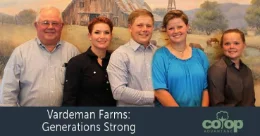
Dean and Lacy Vardeman
Vardeman Farms · Slaton, Texas
Dean and Lacy Vardeman farm nearly 5,000 acres of cotton, along with rotational crops, on Vardeman Farms in southeast Lubbock County near Slaton, Texas. Dean has served on local cotton gin boards and the board of Plains Cotton Cooperative Association, helping growers navigate challenges like reniform nematode resistance. He began farming with his father and brother, and now partners primarily with his two daughters to continue the farm's legacy.
Lacy Cotter-Vardeman is a leading voice in regenerative agriculture. Since 2017 she has built no-till, multi-species cover-crop, and cattle-grazing systems that have raised yields as much as 25% while cutting fuel and irrigation use. She also founded the Sandhills Area Research Association (SARA), a nonprofit that has helped conserve roughly 15,000 acres of regional farm and ranch land and now partners directly with NASA Acres on the Space4Ag Tour. The Vardemans will show how a multi-generation cotton operation and a conservation nonprofit grew out of the same family farm.
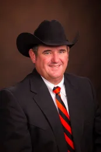
Dr. Todd Baughman
Center Director, Texas A&M AgriLife Research and Extension Center · Lubbock, Texas
Dr. Todd Baughman directs the Texas A&M AgriLife Research and Extension Center at Lubbock, one of 13 AgriLife centers across Texas and a central hub for agricultural research on the Southern High Plains. A weed scientist and agronomist, he earned his Ph.D. in weed science from Mississippi State University and served 15 years as an AgriLife Extension crop production and statewide peanut specialist in the Rolling Plains before spending a decade at Oklahoma State University as a professor and weed scientist.
He returned to Texas A&M in 2024 to lead the Lubbock center, where his priority is research and extension programs that support cotton, corn, grain sorghum, peanut, and wheat producers across the region. In 2026 he received the Southern Weed Science Society's Outstanding Educator Award. Dr. Baughman will host the tour's visit to the AgriLife center.
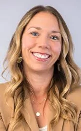
Dr. Katie Lewis
Soil Chemistry & Fertility Scientist, Texas A&M AgriLife Research · Lubbock, Texas
Dr. Katie Lewis is a soil chemistry and fertility scientist and professor in the Texas A&M Department of Soil and Crop Sciences, based at the AgriLife Research and Extension Center at Lubbock with a joint appointment at Texas Tech University. Over more than a decade she has built her program around three areas: nutrient management, resilient cropping systems, and soil health — with a particular focus on cover crops and conservation tillage in semi-arid cotton systems.
Her team uses unmanned aerial systems to capture high-resolution field measurements feeding a first-of-its-kind decision support tool, and her work has shown measurable gains in soil organic carbon even in drought-prone regions. In 2026 she received the Texas Commission on Environmental Quality's Environmental Excellence Award for Agriculture. She grew up on a farm and is married to a Southern High Plains farmer.
Dr. Ethan Triplett
Research and Carbon Monitoring Coordinator, National Sorghum Producers · Lubbock, Texas
Dr. Ethan Triplett is Research and Carbon Monitoring Coordinator for National Sorghum Producers, based in Lubbock. A crop scientist with a Ph.D. from Texas Tech University, his work centers on advancing sustainability in agriculture — optimizing plant performance, enhancing genetic traits, and improving environmental outcomes for sorghum growers.
His work bridges field research and carbon measurement on working farms, combining data-driven analysis with practical agronomy to give sorghum producers credible, usable information on sustainability outcomes.
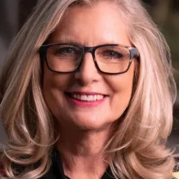
Susan Bergen
Bergen Enterprises · Sulphur, Oklahoma
Susan Bergen and her husband Floyd run Bergen Enterprises, a family of agricultural and food businesses that grew out of Floyd's Bergen Foods and now includes cattle operations across multiple Oklahoma ranches. Their ranch near Sulphur, added more than 30 years ago, spans thousands of acres of tallgrass and mixed-grass prairie across Cleveland, Johnston, Pontotoc, and McClain counties.
Since 2012, Susan has practiced restorative grazing to rebuild soil structure, improve moisture retention, boost plant diversity, and eliminate pesticide use — work that earned the ranch the Oklahoma Department of Wildlife Conservation's 2023 Landowner Conservationist of the Year award. She also owns Peach Crest Ranch, a 12,000-acre organic operation producing grass-fed, minimally processed beef and pork, and serves on the Board of Regents for the Oklahoma Agricultural and Mechanical Colleges. Susan will host the Space4Ag Tour's dinner at her home in Sulphur.
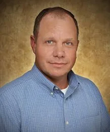
Dr. Kent Martin
Oklahoma Host · Professor of Agronomy, Northwestern Oklahoma State University
Dr. Kent Martin is a sixth-generation Oklahoma farmer and rancher who also serves as a professor of Agronomy at Northwestern Oklahoma State University. Before returning to his home state, he spent years as a research and extension professor in the Department of Agronomy at Kansas State University, focusing on remote sensing and nutrient management — expertise that now underpins his work with NASA Acres' Farm Innovation Ambassador Team (FIAT), helping translate satellite Earth-observation data into practical tools for producers.
Kent also runs Martin Ag Consulting, specializing in land reclamation and fertilizer product development, and has held sorghum industry leadership roles including chairman of the United Sorghum Checkoff Program, the National Sorghum Producers board, and the Oklahoma Sorghum Commission and Association. He will host the Space4Ag Tour's Oklahoma stop, sharing his farm and his perspective as a bridge between space-based science and the soil.
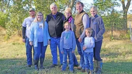
Ray and Ryan Flickner
Flickner Innovation Farms · Moundridge, Kansas
Ray Flickner is the fifth generation, and his son Ryan the sixth, to farm the family's land near Moundridge, Kansas, an operation dating back to the 1870s. In 2018 they formally launched the Flickner Innovation Farm, turning their 850-plus acres into a working test site for irrigation efficiency, soil health, and weed-management research.
The farm is now a hub for more than a dozen university, industry, and agency partners, and its water-conservation work has earned a Kansas Governor's Water Conference Success Story award, the Kansas Farm Bureau's statewide Natural Resources award, and the Kansas Bankers Association Water Conservation Award — plus an invitation to testify before Congress. Ray also serves on the steering committee for NASA Acres' Farm Innovation Ambassador Team (FIAT). The Flickners will host the Space4Ag Tour's Kansas farm day.
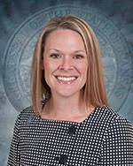
Susan Metzger
Director of Strategic Interdisciplinary Program Development, Kansas State University
Susan Metzger is director of strategic interdisciplinary program development at Kansas State University, where she leads the Kansas Water Institute and the Kansas Center for Agricultural Resources and the Environment. She collaborates with university leadership and external partners to advance integrated agricultural programs, bringing deep expertise in water policy, natural resource management, and stakeholder engagement built over 25 years as a scientist and leader in water resource planning.
Before K-State, Susan was deputy secretary of the Kansas Department of Agriculture, serving the farmers, ranchers and agribusinesses of Kansas, and spent 11 years at the Kansas Water Office as chief of planning and policy, where she was instrumental in developing the Long-Term Vision for the Future of Water Supply in Kansas. She earned a bachelor's degree in biological sciences from the University of Mary Washington, a master's in biological sciences from Old Dominion University, and a doctorate in leadership communications from K-State.